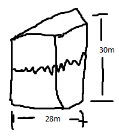

Atividade do dia 24/04/24
1. Você tem acesso a redes sociais ou gostaria de ter? Por quê?
2. Que redes sociais você conhece? Tem preferência por algumas delas? Qual?
3. Que benefícios você vê no uso das redes sociais?
4. Vê algum prejuízo também? Em caso positivo, qual ou quais?
5. Você vê alguma vantagem em se informar por meio das redes sociais? Se sim, qual?
6. Acha seguro informar-se utilizando esse meio? Por quê?
Atividade do dia 24/04/24
Os textos multissemióticos são textos que apresentam muitos elementos, como imagens, ícones e desenhos em sua constituição, ou seja, são constituídos de várias linguagens (modos e semioses). Em geral, esses textos informam por meio de recursos visuais, além do texto verbal. Desse modo, eles podem aprender a linguagem verbal, visual, digital, sonora, entre outras.
Vamos explorar alguns exemplos de textos multissemioticos que você pode encontrar no seu cotidiano! Um exemplo é o Mapa Mental, que consiste em um diagrama com palavras-chave, desenhos e linhas que conectam as ideias.
Outro exemplo são os infográficos, que são representações visuais de dados, estatísticas ou processos.
As Histórias em quadrinhos (HQ) também são multissemióticos. Elas combinam texto escrito, imagens e balões de fala para contar uma história de forma visualmente atrativa.
As tirinhas são um tipo específico de HQ, caracterizadas por serem cartas e apresentarem uma situação cômica ou reflexiva.
Os textos multissemióticos são ferramentas valiosas para a comunicação humana, pois permitem que as pessoas explorem diferentes formas de representação e compreensão de informações.
01 - Em um texto multissemiótico, como podemos compreender as informações além das palavras escritas?
a) Apenas por meio das imagens presentes no texto.
b) Apenas por meio dos elementos sonoros, como músicas ou sons ambientes.
c) Através da combinação de diferentes recursos, como imagens, cores, símbolos, notas musicais e outros elementos visuais.
d) Apenas por meio dos elementos táteis, como texturas ou relevos presentes no texto.
02 - Qual é o objetivo dos textos multissemióticos?
Atividade do dia 22/05/24
Atividade do dia 24/05/24
Atividade do dia 13/06/24
Estabelecem relação de soma adicionando um sentido ao outro na oração ou no(...)
Veja:
Dancei muito na festa,
Nesse enunciado, a conjunção "portanto", mostra o termo
Nem me lembrei da festa, porque meu dia foi muito corrido.
Atividade do dia 29/04/24
Volume é a principal medida espacial, no entanto, não é única. Além do volume, a capacidade também mede o espaço.
É importante ressaltar que somente figuras tridimensionais possuem volume, por exemplo, um quadrado não tem volume, mas um paralelepípedo tem.
Quadrado (Bidimensional) 2D Não tem volume
Paralelepípedo (tridimensional) 3D Tem volume
O paralelepípedo é uma figura tridimensional composta por seis faces retangulares e oito vértices, é também chamado de bloco. As três dimensões do paralelepípedo são: Comprimento, largura e altura.
O volume do paralelepípedo é dado pela multiplicação dessas três dimensões.
Atividade do dia 30/04/24
Atividade do dia 30/04/24
01 - Uma piscina tem 8m de largura, 6m de comprimento e 2,5m de profundidade, qual seu volume?
02 - Calcule o volume de água que tem na lata abaixo.
03 - Determine o volume a seguir.
atividade do dia 15/05/24
Atividade do dia 11/06/24
atividade do dia 01/04/24
1°Horizontal: Horizontalização
2°Vertical: Verticalização
São cidades que apresentam modernas redes de transportes e telecomunicações, são ligadas ao processo de globalização
São cidades com mais de 10 milhões de habitantes
União física de duas ou mais cidades
Ex:São paulo e RJ
Atividade do dia 04/04/24
Atividade do dia 04/04/24
Atividade do dia 18/04/24
Atividade do dia 25/04/24
OBS: O Brasil é um dos campeões do investimento em (sustentalidade) energia limpa.
Atividade do dia 25/04/24
Atividade do dia 02/05/24
Gera energia pela fissão nuclear gerada pela energia limpa
OBS: O Brasil gera a energia nuclear em angra II e em breve angra III no Rio de Janeiro.
Atividade do dia 02/05/24
Atividade do dia 06/05/24
Atividade do dia 23/05/24
Atividade do dia 27/05/24
Atividade do dia 29/05/24
Sem aula de inglês no momento
Atividade do dia 16/04/24
Atividade do dia 01/04/24
Atividade do dia 12/04/24
1° VOCÊ SABE O QUE É RELEITURA?
2° VOCÊ JÁ ESCUTOU ALGO SOBRE O TEMA RELEITURA?
3° O QUE É CITAÇÃO?
Atividade do dia 19/02/24
Em 11 de janeiro de 1928, a pintora Tarsila do Amaral acordou ansiosa, para o aniversãrio de seu marido, ela tinha preparado um quadro de 85cm por 73cm pintado em segredo nos últimos meses. "Excepcionalmente quadro" dizia ele, é o homem plantar na terra sendo uma das obras pintadas "abaporu", "aba e poru" homem que come.
Atividade do dia 22/04/24
1. Pesquisem a sipnose de uma das adaptações de Brecht no Brasil, assim como o enredo e os principais personagens.
2. A partir dessas informações, criem um cartas fictício para divulgar a peça utilizando desenhos ou colagens.
3. Compartilhem os cartazes com a turma expondo-os em algum lugar de maior circulação na escola.
Atividade do dia 06/05/24
1. Defina com suas palavras 5 pontos positivos relacionados à arte visual "Releitura" de
Atividade do dia 20/05/24
I -
II -
III -
IV -
V -
Atividade do dia 17/06/24
Ao longo do tempo observamos diversas mudanças com vários contextos. Entre elas o processo de criação de uma imagem ou "obra de arte", fazendo uso de vários elementos.
Entre o processo de criação para uma releitura, você usa apenas os elementos já existentes, fazendo pequenas modificações sem perder a essência da obra original.
Em 1922, tivemos uma artista renomada chamada Tarsila do Amaral, que observava como era a vida no cotidiano do povo nessa época.
Podemos analisar que uma das obras importantes foi a obra chamada "A negra", que por sua vez teve um dos papéis importantes.
Releitura, "Um processo de criação em uma obra existente"
"A negra" uma personagem de experiência vivida no período de 1922.
Atividade do dia 17/05/24
Os valores humanos podem ser definidos como ética e moral que conduz a vida da pessoa. Eles fazem parte da formação da sua consciência, e da maneira de como vivem. Relacionam em sociedade.
Os valores humanos funcionam como via de conduta que podem determinar decisões importantes e garantir que a convivência entre as pessoas seja pacífica, honesta e justa. São os valores cultivados por uma pessoa que vão basear suas decisões e demonstrar ao mundo quais os princípios que regem a sua vida.
Existem muitos valores que são importantes em qualquer contexto ou lugar, podendo ser considerados valores universais, eles devem ser saudável entre as pessoas que fazem parte de uma sociedade.
Uma primeira coisa que a gente deve levar em conta quando vai discutir "Valores humanos", o que essa palavra pode significar, porque mesmo sendo uma das palavras mais usadas, quando você pergunta o que é valor, poucos conseguem dizer o que é, portanto a primeira coisa que precisamos faer é distinguir e que valor significa um monte de coisas.
RELACIONE AS IMAGENS:
(a imagem de um coração) =
(a imagem de uma cruz) =
(a imagem de uma mão) =
1 - Como podemos definir "Valores humanos"?
2 - Quando falamos em princípios de Ética e Moral, o que podem atribuir como significado?
3 - Defina o que é valor:
4 - O que é uma sociedade com valor?
Atividade do dia 24/05/24
atividade do dia...